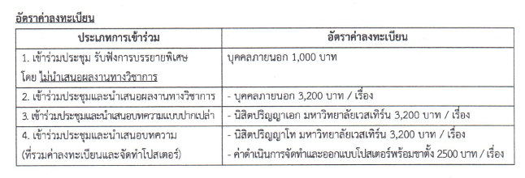

การประชุมวิชาการและนำเสนอผลงานวิจัยระดับชาติ ครั้งที่ 23 เรื่อง "การขับเคลื่อนและยกระดับการวิจัย สู่นวัตกรรม เพื่อการพัฒนาอย่างยั่งยืน"
การประชุมวิชาการและนำเสนอผลงานวิจัยระดับชาติ ครั้งที่ 23 เรื่อง "การขับเคลื่อนและยกระดับการวิจัย สู่นวัตกรรม เพื่อการพัฒนาอย่างยั่งยืน" วันเสาร์ที่ 25 และวันอาทิตย์ที่ 26 พฤศจิกายน พ.ศ. 2566 ณ อาคารคณะทันตแพทยศาสตร์ มหาวิทยาลัยเวสเทิร์น วิทยาเขตวัชรพล
หลักการและเหตุผล
การกำหนดทิศทางการพัฒนาประเทศในระยะของแผนพัฒนาเศรษฐกิจและสังคมแห่งชาติ ฉบับที่ 13 (พ.ศ. 2566 - 2570) ที่คำนึงถึงความสอดคล้องกับยุทธศาสตร์ชาติ แนวนโยบายแห่งรัฐ รวมถึงสภาพการณ์ทางเศรษฐกิจและสังคมของประเทศและโลกอย่างรอบต้าน เพื่อนำมากำหนดเป็นทิศทางการพัฒนาประเทศได้อย่างเหมาะสม นอกจากจะต้องคำนึงถึงความสำคัญชองมิติการพัฒนาด้านต่าง ๆ ที่ส่งผลต่อภาพรวมของประเทศ ทั้งที่เกี่ยวข้องกับเศรษฐกิจ สังคม ทรัพยากรมนุษย์ สิ่งแวตล้อม การพัฒนาที่ยั่งยืน วิทยาศาสตร์เทคโนโลยีและนวัตกรรมการวิจัย"จึงเป็นงนสำคัญต่อสถาบันการศึกษาและองค์กรต่างๆ รวมถึงนักวิซาการอิสระ ที่จะดำเนินงานด้านการวิจัยเพื่อนำองค์ความรู้ที่ได้ไปสู่การปรับปรุงและพัฒนาการดำรงชีวิตทั้งในด้านเศรษฐกิจ สังคม การเมือง สิ่งแวดล้อม และวัฒนธรรมให้ดีขึ้น นอกจากนั้นองค์ความรู้ต่งๆยังนำมาใช้ในการปรับตัวให้เข้ากับการเปลี่ยนแปลงของธรรมชาติแสะอารยธรรมของโลกที่เปลี่ยนไป ตังนั้น การวิจัยจึงเป็นองค์ประกอบหลักที่จะนำไปสู่การพัฒนาประเทศรวมถึงการสร้างความได้เปรียบในต้านต่งๆ จึงจำเป็นอย่างยิ่งที่ทุกสถาบันการศึกษาและองค์กรต่างๆจะต้องมีการผลักตันขับเคลื่อนและยกระตับการวิจัยเพื่อผลิตงานวิจัยที่มีคุณภาพ ตลอดจนมีการนำผลวิจัยไปใช้ประโยชน์ในมิติต่างๆ กระบวนการหนึ่งซึ่งสำคัญในการวิจัย คือ การเผยแพร่งานวิจัยสู่แวดวงวิชาการเพื่อนำผลการวิจัยไปใช้ในการแก้ปัญหาไต้อย่างแท้จริง และเป็นการพัฒนางานวิจัยที่สูงขึ้นต่อไปอีก ทั้งยังเป็นเวทีทางวิซากรสำหรับนักวิจัในการแลกเปลี่ยนเรียนรู้ประสบการณ์ด้านการวิจัยที่จะพัฒนางานวิจัยที่สูงขึ้นต่อไปจากยุทธศาสตร์มหาวิทยาสัยเวสเทิร์น 5 ปี (พ.ศ. 2565 - 2569) ประเต็นยุทธศาสตร์ที่ 2 การสร้างสรรค์งานวิจัย นวัตกรรม และผลงานทางวิชาการที่มีคุณภาพ ประเด็นยุทธศาสตร์นี้ มุ่งที่พัฒนาบุคลากรให้เป็นนักวิชาการนักวิจัย และ/หรือนักสร้างสรรค์นวัตกร กรรมที่มีคุณภาพ นันการสร้างผลงานที่เป็นประโยชน์ต่อสังคมและชุมชน รวมทั้งสามารถนำไปสู่การใช้ประโยชน์เชิงพาณิชย์ ซึ่งกำหนดเป้าประสงค์ ไว้ (1) ผลงานวิจัย นวัตกรรม และผลงานทางวิชาการได้รับการเผยแพร่ ตามณณฑ์การขอกำหนดตำแหน่งทางวิชาการ (2) ผลงานวิจัย นวัตกรรม และผลงานทางวิชาการได้รับการยอมรับในแวดวงวิซาการ และหรือวิซาชีพ ชุมชน สังคม และประเทศชาติ และกำหนดกลยุทธ์ในการดำเนินการโดย (1) ส่งสริมและสนับสนุนนให้บุคลากรเผยแพร่ผลงานวิจัย นวัตกรรม และผลงานวิจัยตามเกณฑ์การขอกำหนดตำแหน่งทางวิชาการ (2) การส่งเสริมและสนับสนุนการสร้างผลงานวิจัย นวัตกรรม และผลงานทางวิชาการที่ก่อให้เกิดประโยชน์ต่อแวดวงวิซาชีพ ชุมชนสังคม และประเทศซาติ (3) การส่งเสริมและสนับสนุนบุคลากรให้สร้างผลงานวิจัยนวัตกรรม และผลงานทางวิชาการที่นำไปสู่การใช้ประโยชน์เชิงพาณิชย์ ตอบสนองความต้องการภาคอุตสาหกรรม 3. การนำเสนอแบบโปสเตอร์ (poster) ผู้นำเสนอต้องยืนประจำจุดโปสเตอร์ของตนเองโดยใช้เวลาในการนำเสนอ ตอบข้อ ซักถามของกรรมการ รามไม่เกิน 20 นาที 4. บทความวิจัยและบทความวิชาการฉบับเต็มที่ผู้นำเสนอผลงานได้ปรับปรุงแก้ไขตามช้อเสนอแนะจากผู้ทรงคุณวุฒิแล้วจะไต้ตีพิมพ์ full paper เผยแพร่ใน Proceeding ของการประชุม
หมายเหตุ
1. เมื่อมีการชำระเงินค่าลงทะเบียนแล้ว ทางผู้จัดงานประชุมวิซาการจะไม่คืนเงินค่าลงทะเบียนไม่ว่ากรณีใตๆ ทั้งสิ้น
2. อัตราคำลงทะเบียนนี้รวมเอกสารประกอบการประชุม อาหารกลางวันและอาหารว่าง 2 มื้อ
3. หากต้องการใบสร็จเพื่อเบิกค่าลงทะเบียนของหน่วยงน กรุณานำใบเสร็จที่ชำระของธนาคาร (ตัวจริง) นำมาติดต่อได้ที่ การเงิน ชั้น 1 ณ อาคารคณะทันตแพทยศาสตร์ มหาวิทยาลัยเวสเทิร์น ในวันและเวลาดังกล่าว
4. อัตราค่าลงทะเบียนสำหรับการเข้าร่วมนำเสนอผลงานต่อ 1 ท่านเท่านั้น หากผู้เข้าร่วมนำเสนอประสงค์ให้บุคคลอื่นเข้าร่วมฟังการบรรยายประสงศ์สามารถลงทะเบียนในลักษณะของการเข้าร่วมประชุม อัตราค่าลงทะเบียน
5. เกียรติบัตรในการนำเสนอผลงานที่มอบให้ จะปรากฎรายชื่ออ้างอิงจากชื่อที่ลงทะเบียนนำเสนอผลงานเท่านั้นส่วนรายชื่อผู้ร่วมในบทความจะปรากฏในฉบับรวมเล่มการประชุมวิชาการฯ
การลงทะเบียนทางเว็บไซต์
ผู้สมัครต้องทำการลงทะเบียนและแนบไฟล์เอกสารการชำระเงินคำลงทะเบียนให้เรียบร้อยพร้อมแนบไฟล์บทความฉบับเต็ม upload ไฟล์ word ให้เรียบร้อย จากนั้นให้ผู้สมัครเข้าไปกรอกข้อมูลเพื่อลงทะเบียนรับรหัสประจำตัวที่ http://www.western.ac.th/index.php/register โดยผู้สมัครต้องกรอกข้อมูลให้ครบถ้วนแล้วกดยืนยันเพื่อรับ รหัสประจำตัว จากนั้นตรวจสอบข้อมูลและ กดยืนยันอีกครั้ง จึงจะถือว่าการสมัครเสร็จสมบูรณ์ สอบถามข้อมูลเพิ่มเดิมโทร.0-2563-5252 ต่อ 5017 และ 5019